Architecture 10 - Galaxy File Sources Architecture
Contributors
Questions
What are File Sources in Galaxy?
How do user-defined file sources work?
What is the difference between File Sources and Object Stores?
Objectives
Understand the File Sources plugin architecture
Learn about user-defined file source templates
Understand fsspec and PyFilesystem2 base classes
Learn about OAuth integration for cloud services
layout: introduction_slides topic_name: Galaxy Architecture
Architecture 10 - Galaxy File Sources Architecture
The architecture of pluggable file sources in Galaxy.
layout: true left-aligned class: left, middle — layout: true class: center, middle
The Problem & Solution
Problem
- Galaxy needs to read and write files from diverse sources
- Before file sources, each backend required core code changes and there was no extensibility for new storage types
Plugin Architecture
FilesSourceinterface for all backendsBaseFilesSourcereference implementationConfiguredFileSourcesorchestrates plugins (lib/galaxy/files/__init__.py)FileSourcePluginLoaderdiscovers plugins (lib/galaxy/files/plugins.py)
Applications
- Upload dialog, rule builder, collection creation, etc.
- History & workflow import/export.
- Directory tools.
class: reduce70
Core Abstractions
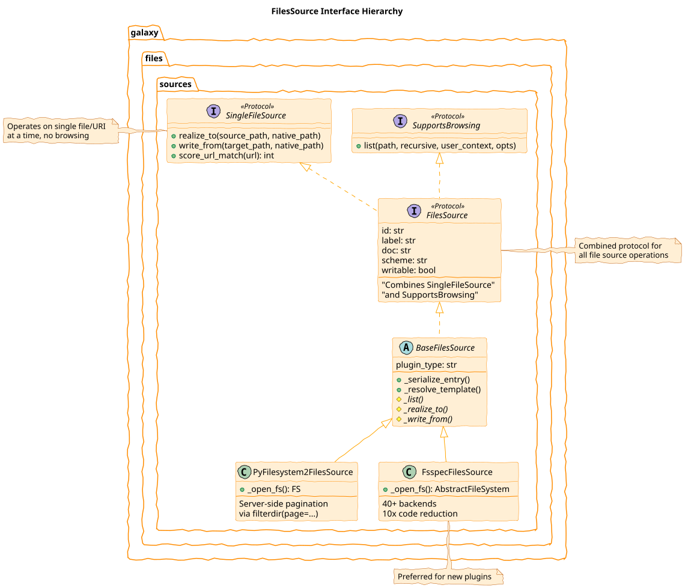
Three interfaces: SingleFileSource, SupportsBrowsing, FilesSource
class: reduce70
URI Routing & Plugin Scoring
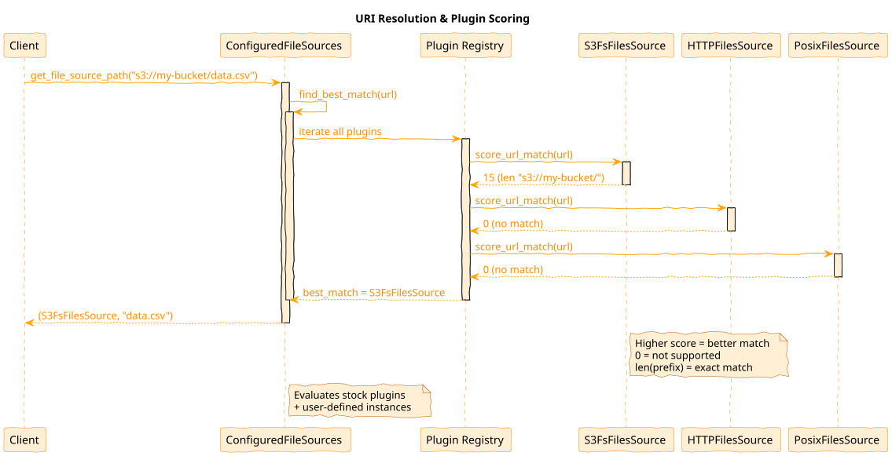
class: reduce70 left-aligned
URI Scoring Example: S3 FilesSource
def score_url_match(self, url: str) -> int:
if url.startswith("s3://"):
bucket_name = self._get_config_bucket()
if bucket_name:
prefix = f"s3://{bucket_name}/"
if url.startswith(prefix):
return len(prefix) # Exact bucket match
# Prevent s3://my-bucket-prod matching s3://my-bucket
elif url.startswith(f"s3://{bucket_name}") and url[len(f"s3://{bucket_name}")] != "/":
return 0 # Boundary check failed
return 1 # Generic S3 match
return 0
Scoring algorithm: Returns 0 (unsupported) to URI length (exact match)
class: reduce70
User Context & Access Control
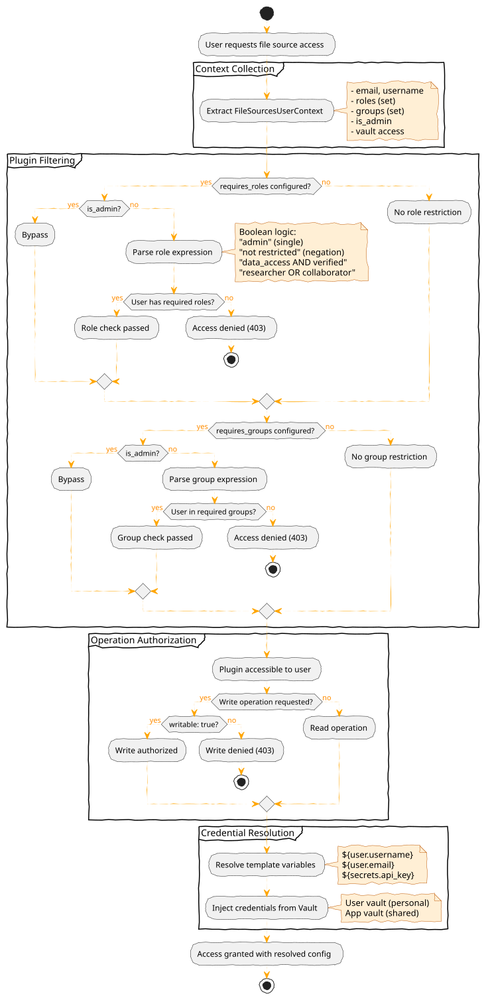
class: reduce90
Access Control Configuration
# Role-based access control
- type: s3fs
id: restricted_bucket
label: Restricted Project Data
bucket: sensitive-data
requires_roles: "data_access"
requires_groups: "engineering OR research"
# Vault credential injection
- type: posix
id: user_staging
root: /data/staging/${user.username}
writable: true
class: reduce90 left-aligned
PyFilesystem2 Foundation
Older abstraction: PyFilesystem2 (fs) library for FTP, WebDAV, cloud SDKs
- Server-side pagination via
filterdir(page=(start, end)) - Context manager pattern (filesystems opened/closed per operation)
- Use cases: FTP, WebDAV, SSH protocols
class PyFilesystem2FilesSource(BaseFilesSource):
def _list(self, path="/", recursive=False, user_context=None, opts=None):
with self._open_fs(user_context) as fs:
limit = opts.limit if opts else None
offset = opts.offset if opts else 0
# Server-side pagination for large directories
if limit is not None:
page = (offset, offset + limit)
entries = list(fs.filterdir(path, page=page))
else:
entries = list(fs.scandir(path))
return self._serialize_entries(entries), len(entries)
class: reduce70
fsspec
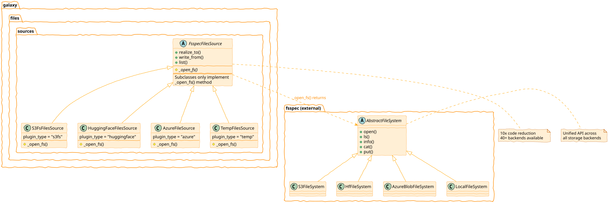
class: reduce70
fsspec Plugin Simplicity
Plugin authors implement only _open_fs() - base class handles the rest
class S3FsFilesSource(FsspecFilesSource):
"""S3-compatible storage via fsspec."""
plugin_type = "s3fs"
def _open_fs(self, user_context=None):
config = self._get_config(user_context)
return fsspec.filesystem(
"s3",
anon=config.anon,
key=config.access_key_id,
secret=config.secret_access_key,
client_kwargs={"endpoint_url": config.endpoint_url},
)
Base class provides: realize_to, write_from, list (with pagination), score_url_match
class: enlarge120 left-aligned
PyFilesystem2 vs fsspec
| Feature | PyFilesystem2 | fsspec |
|---|---|---|
| External Backends | ~20 | 40+ (Zarr, Git, HF, etc.) |
| Galaxy Plugins | 12 (FTP, WebDAV, Dropbox, Drive, GCS…) | 6 (S3, Azure flat, HF) |
| Pagination | Native server-side filterdir(page=...) |
Client-side after full listing |
| Ecosystem | 7M downloads/mo | 543M downloads/mo |
fsspec born from Dask, used by pandas, xarray, zarr, PyArrow, HF Datasets
Downloads: pypistats.org, Dec 2025
class: reduce70
Adding a Plugin: The Pattern
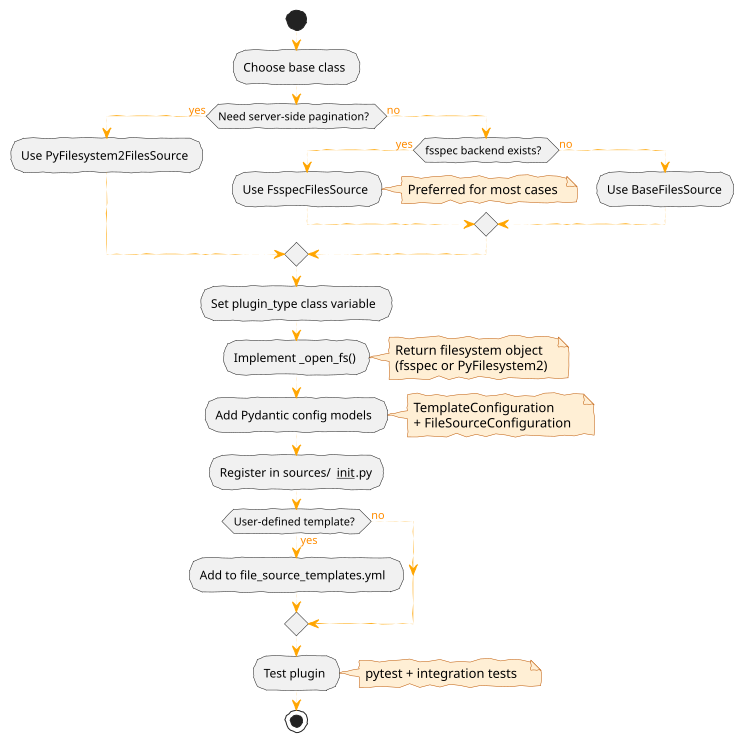
Key insight: FsspecFilesSource handles file operations—you implement only _open_fs()
class: left-aligned
Adding a Plugin: Steps
Create one file: lib/galaxy/files/sources/mycloud.py
- Define Pydantic config models (template + resolved)
- Create plugin class with
plugin_type(enables auto-discovery) - Implement
_open_fs()returning fsspec filesystem - Register configs in
lib/galaxy/files/templates/models.pytype unions - Add documentation to
doc/source/admin/data.md
class: reduce70
Adding a Plugin: Example
# Pydantic models: template allows Jinja2, resolved requires concrete values
class MyCloudTemplateConfig(FsspecBaseFileSourceTemplateConfiguration):
token: Union[str, TemplateExpansion, None] = None
endpoint: Union[str, TemplateExpansion, None] = None
class MyCloudConfig(FsspecBaseFileSourceConfiguration):
token: Optional[str] = None
endpoint: Optional[str] = None
# Plugin class: only _open_fs() required
class MyCloudFilesSource(FsspecFilesSource[MyCloudTemplateConfig, MyCloudConfig]):
plugin_type = "mycloud" # Auto-discovery key
required_module = MyCloudFS # Optional: lazy import check
required_package = "mycloud-fsspec" # Optional: helpful error message
template_config_class = MyCloudTemplateConfig
resolved_config_class = MyCloudConfig
def _open_fs(self, context, cache_options):
config = context.config
return fsspec.filesystem("mycloud", token=config.token)
class: reduce90
Stock Plugins: Built-in Sources
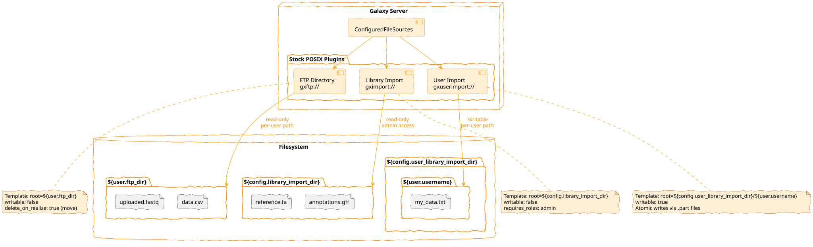
Three sources in lib/galaxy/files/sources/galaxy.py extend PosixFilesSource:
| Class | Scheme | Root Template |
|---|---|---|
UserFtpFilesSource |
gxftp:// |
${user.ftp_dir} |
LibraryImportFilesSource |
gximport:// |
${config.library_import_dir} |
UserLibraryImportFilesSource |
gxuserimport:// |
${config.user_library_import_dir}/${user.email} |
POSIX Security & Behaviors
Symlink Protection (lib/galaxy/files/sources/posix.py)
if config.enforce_symlink_security:
if not safe_contains(effective_root, source_native_path, allowlist=self._allowlist):
raise Exception("Operation not allowed.")
safe_contains in util/path/__init__.py validates against symlink_allowlist
Atomic Writes (lib/galaxy/files/sources/posix.py)
target_native_path_part = os.path.join(parent, f"_{name}.part")
shutil.copyfile(native_path, target_native_path_part)
os.rename(target_native_path_part, target_native_path)
Move vs Copy: delete_on_realize config—FTP defaults to ftp_upload_purge (frees quota)
class: enlarge150
User-Driven Storage
Global Storage: Admin configures all sources globally in file_sources_conf.yml for all users
Problem: Doesn’t scale—diverse user needs (buckets, projects, credentials)
Solution: Template catalog + user instances
- Admin provides templates
- Users instantiate with their credentials
- Allows multiple instances per template
class: reduce70 left-aligned
Template Catalog Structure
# file_source_templates.yml (admin-configured)
- id: s3_template
name: AWS S3 Bucket
description: Connect to your AWS S3 bucket
version: 1
variables:
bucket:
label: Bucket Name
type: string
region:
label: AWS Region
type: string
default: us-east-1
secrets:
access_key_id:
label: Access Key ID
secret_access_key:
label: Secret Access Key
configuration:
type: s3fs
bucket: ""
access_key_id: ""
class: center
Template System: Pydantic Models
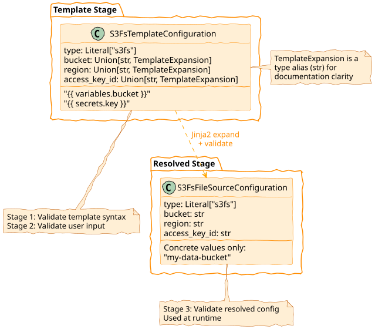
class: reduce90 left-aligned
Two-Tier Configuration
# Template-stage: allows Jinja2 expressions
class S3FsTemplateConfiguration(BaseModel):
type: Literal["s3fs"]
bucket: Union[str, TemplateExpansion] # ""
access_key_id: Union[str, TemplateExpansion]
# Resolved-stage: concrete values only
class S3FsFilesSourceConfiguration(BaseModel):
type: Literal["s3fs"]
bucket: str # Must be concrete string
access_key_id: str
Three-stage validation: Template syntax → User input → Resolved config
class: center
Template Expansion: Jinja2 Resolution
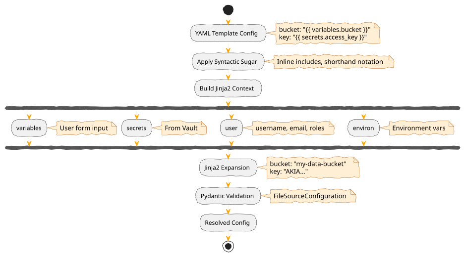
class: reduce90 left-aligned
Jinja2 Contexts
Four available contexts for variable resolution:
context = {
"variables": variables, # User form input
"secrets": secrets, # From Vault
"user": user, # Galaxy user (username, email, roles)
"environ": os.environ, # Environment vars
}
expanded = jinja_env.expand(template.model_dump(), context)
Custom filters: ensure_path_component, asbool
class: center
User Instance Lifecycle
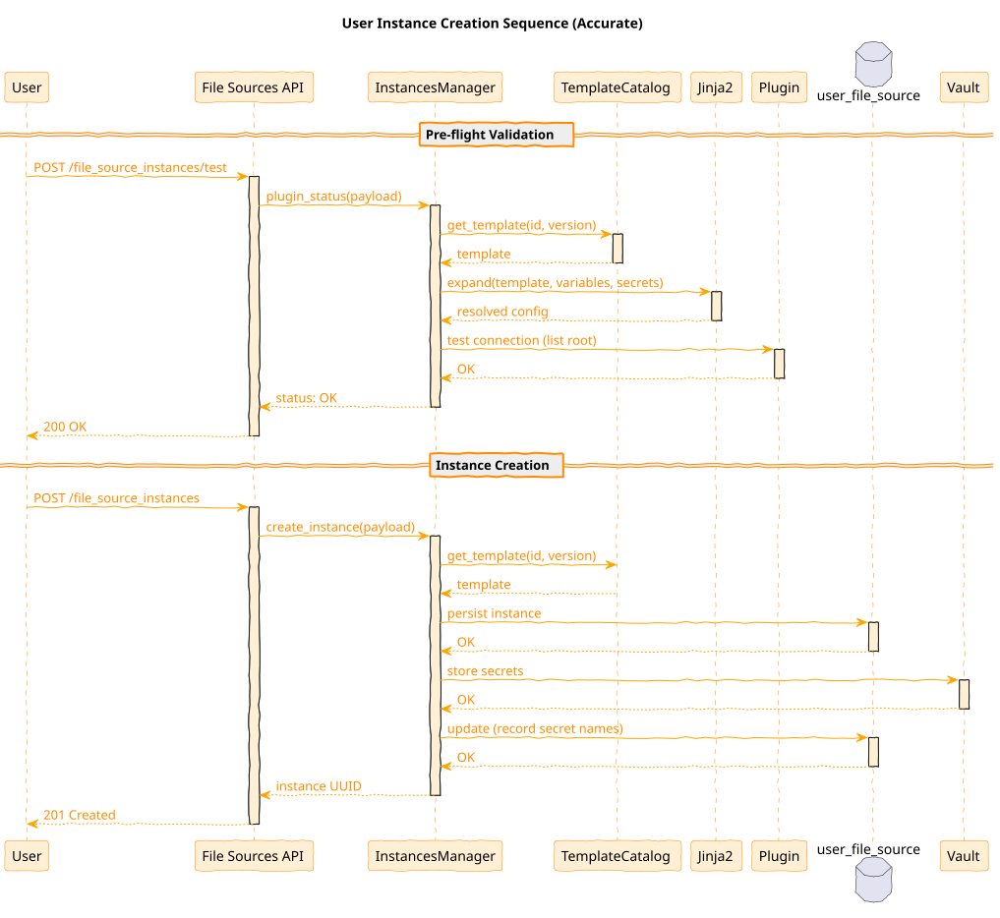
class: enlarge120
Instance CRUD Operations
Persistence: user_file_source table + Vault
Validation workflow:
- Payload schema validation against template
- Template variable/secret validation
- Connection testing (root-level listing)
- Persist to database + Vault
Security: Ownership validation, user-bound isolation
class: reduce90 left-aligned
OAuth 2.0 Integration Pattern
Authorization flow:
- User clicks “Authorize” → Galaxy generates auth URL + pre-generates UUID
- Redirect to provider (Dropbox, Google) → User grants permissions
- Provider callback with code → Galaxy exchanges for tokens
- Tokens stored in Vault → Instance created
# Dropbox OAuth template
- id: dropbox_oauth
name: Dropbox
secrets:
client_id: ...
client_secret: ...
configuration:
type: dropbox
access_token: ""
refresh_token: ""
class: center
OAuth 2.0 Authorization Flow
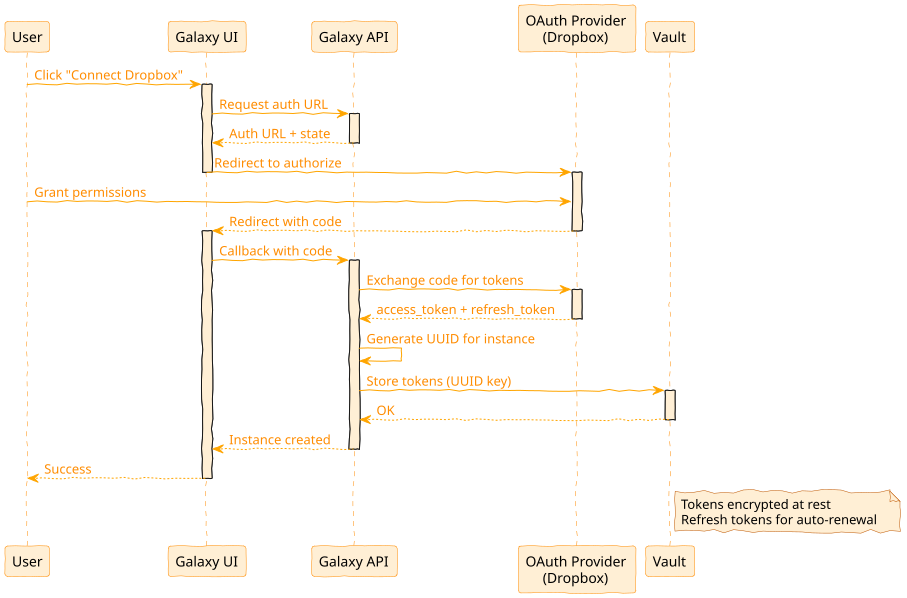
class: enlarge120
URL Unification
Before PR #15497: Separate code paths
- HTTP/FTP: Custom URL handler
- S3: Separate S3 handler
- DRS: Separate DRS handler
- File sources:
gxfiles://only
After: All URLs routed through file sources
- Unified authentication
url_regexfor site-specific handlershttp_headersfor Bearer tokens, Basic Auth
class: reduce70
URL Routing with Credentials
# Site-specific URL routing with auth
- type: http
id: internal_api
label: Internal Data API
url_regex: "^https://api\\.internal\\.org/"
http_headers:
Authorization: "Bearer ${secrets.api_token}"
- type: http
id: public_http
label: Public HTTP
url_regex: "^https?://.*"
# No auth - public access
URLs automatically route to correct handler based on scoring
class: center
API Integration
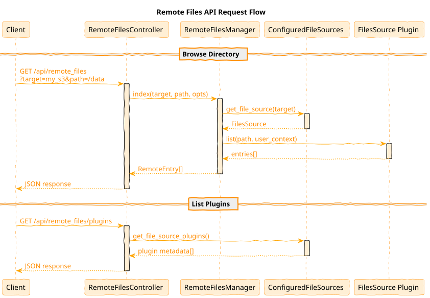
class: enlarge120
API Endpoints
Remote Files API (browsing):
GET /api/remote_files- Directory listing with paginationGET /api/remote_files/plugins- Plugin enumerationPOST /api/remote_files- Entry creation (writable sources)
File Sources API (templates/instances):
GET /api/file_source_templates- Template catalogPOST /api/file_source_instances- Create instanceGET /api/file_source_instances- List user instancesPUT/DELETE /api/file_source_instances/{uuid}- Update/delete
class: center
Evolution Timeline
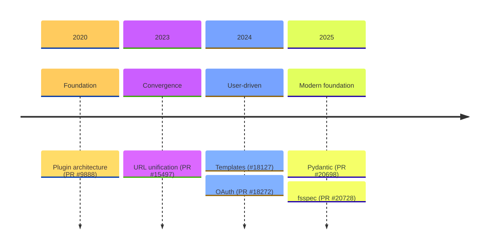
| .footnote[Previous: Galaxy Plugin Architecture | Next: Galaxy Markdown Architecture] |
Key Points
- File Sources provide hierarchical file access for import/export
- User-defined templates enable personal cloud storage connections
- fsspec enables easy integration of 40+ storage backends
- OAuth 2.0 supports seamless cloud service authentication
Thank you!
This material is the result of a collaborative work. Thanks to the Galaxy Training Network and all the contributors! Tutorial Content is licensed under
Creative Commons Attribution 4.0 International License.
Tutorial Content is licensed under
Creative Commons Attribution 4.0 International License.